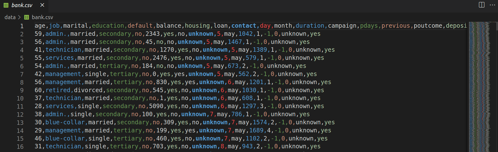

Data Formats
JSON
JSON (JavaScript Object Notation) is an open standard and language-independent file format that uses human-readable text to store and transmit data objects consisting of attribute–value pairs and arrays. For example:
[
{
"age": 42,
"job": "entrepreneur",
"marital": "married",
"education": "primary",
"balance": 558,
"housing": "yes",
"duration": 186,
"campaign": 2
},
{
"age": 35,
"job": "teacher",
"marital": "single",
"education": "master's",
"balance": 1200,
"housing": "no",
"duration": 95,
"campaign": 1
},
{
"age": 28,
"job": "engineer",
"marital": "single",
"education": "bachelor's",
"balance": 3000,
"housing": "yes",
"duration": 240,
"campaign": 3
}
]
CSV
CSV (comma-separated values) and TSV (tab-separated values) files are common types of plain text data files that are used to store tabular data. They provide a simple, lightweight and human readable format for exporting data.
The data in CSV and TSV files is organized into records or rows that are separated by newline characters. Each row contains one or more fields or values that are separated by delimiter characters.

Many programming languages and software tools (like pandas) provide functionality for easily reading and writing CSV and TSV files for routine data import/export tasks without the complexity of a full database.
Tip! 1
To Highlight CSV and TSV files in VS Code, install the Rainbow CSV extension!
While CSV is a commonly used data format, it may have some disadvantages when used in machine learning scenarios:
-
Lack of Standardized Schema: CSV files do not have a standardized schema definition. Each CSV file represents data as rows and columns, but the interpretation of the columns and their data types is left to the user or application. Without a standardized schema, it becomes the responsibility of the Data Scientist to define and enforce the schema, which can lead to inconsistencies and data quality issues.
-
Limited Data Type Support: CSV only supports a few basic data types, such as strings and numbers. More complex data types commonly used in ML, such as datetime, categorical variables, or nested structures, require additional processing and transformation to fit into the CSV format. This can increase the complexity of data preprocessing and introduce potential errors or loss of information during conversion.
-
Lack of Data Compression: CSV files do not provide built-in data compression. As a result, they can occupy a lot of disk space.
Question 1
Answer
Big data or distributed systems.
-
String Encoding Issues: CSV files can encounter encoding issues, especially when dealing with non-ASCII characters or different encoding standards. Proper handling of string encoding is necessary to ensure data integrity in ML workflows.
-
Limited Support for Missing or Null Values: CSV does not have a standardized representation for missing or null values. Different applications or tools may handle missing values differently, leading to inconsistencies in data interpretation.
-
Performance Overhead: CSV files can have performance overhead, especially when dealing with large datasets. Parsing and processing CSV files can be slower compared to more optimized binary formats specifically designed for ML, such as Parquet or HDF5. The textual representation and parsing of CSV files can impact data loading and processing times, particularly in scenarios involving real-time or high-throughput ML.
-
Lack of Metadata Support: CSV format does not provide native support for metadata. In ML, metadata such as feature descriptions, data provenance, or annotations can be crucial for understanding and interpreting the data.
Parquet
Parquet files are a columnar storage file format designed for efficient data storage and processing in big data and machine learning applications. Unlike row-based formats like CSV or JSON, Parquet organizes data column-wise, allowing for better compression, faster query execution, and improved performance.

This columnar storage format reduces disk I/O and memory footprint by reading only the necessary columns during ML model training or data analysis. Additionally, Parquet supports predicate pushdown, which means filtering operations can be pushed down to the storage layer, minimizing the amount of data that needs to be read.
Parquet files are particularly relevant in ML because of their ability to handle large datasets efficiently. ML models often require massive amounts of data for training, and Parquet's compression and query optimization capabilities can significantly reduce storage costs, improve processing speed, accelerate model training, and enhance overall performance.
To notice!
Parquet is valuable format in the ML ecosystem. Click Here to see a Pandas CSV vs. PyArrow parquet reading speed performance comparison.
Tip! 2
To explore Parquet files, you can Install Microsoft Data Wrangler extension!
Extra: protobuf
A word from protobuf developers!
Protocol Buffers are a language-neutral, platform-neutral extensible mechanism for serializing structured data. It’s like JSON, except it’s smaller and faster
Although protobuf is mainly used for communication between services and defining APIs in systems that need high performance, it is an interesting read, especially since we talked about JSON in this class.
Some links about Protocol Buffers:
- https://protobuf.dev/
- https://protobuf.dev/getting-started/pythontutorial/
- https://lab.wallarm.com/what/protobuf-vs-json/
- https://auth0.com/blog/beating-json-performance-with-protobuf/
- https://buf.build/blog/the-real-reason-to-use-protobuf
Exercises
In this exercise section, we will compare reading different file formats using pandas.
Question 2
Question 3
Info!
Understanding the contents of the files is not important for this activity. But feel free to explore if you want!
Question 4
Question 5
Question 6
Question 7
Question 8
Important!
We used pandas to perform this test. If other libraries (such as Spark) are considered, it is expected that the use of parquet will be even more beneficial.
For example, when performing column and row filters, pandas generally needs to read the entire file into memory first before it can apply the filter.
On the other hand, Apache Spark does not need to read the entire parquet file to filter by a column, thanks to its ability to perform predicate pushdown and the efficient structure of the parquet format.
Question 9
Answer
Read Here.
When you run a query that includes a filter (predicate), predicate pushdown attempts to "push" the filter as close as possible to the data source, so that the filtering is done as early as possible in the data processing pipeline. This reduces the amount of data that is read, processed, and transferred between different stages of the system.
References
- Introduction to MLOps. Chapter 6.
- Designing Machine Learning Systems. Chapter 7.
- https://parquet.apache.org/docs/file-format/
- https://en.wikipedia.org/wiki/JSON
- POE